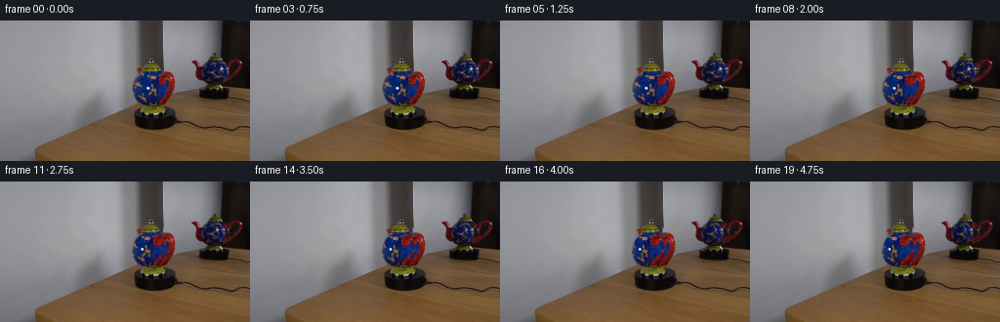
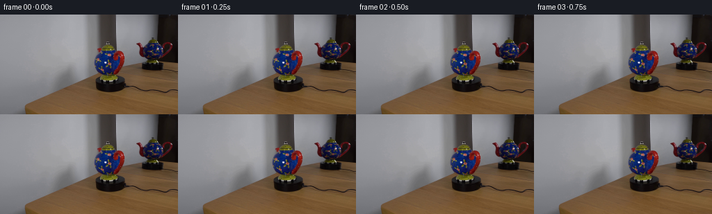

CODING AGENTS AS PIXEL WORLD MODELS
traex/DeepSeek-V4.1-Flash · 0121
点击播放 · 原生 RGB 像素
此结果可播放，但该运行尚未通过最终提交审核。页面展示不代表评测通过。
逐轮保存的候选
回放视频、检查图与代码变化。
每份候选均可单独播放。实际图片检查记录在下方工具轨迹中。
候选 01播放与检查图
点击播放 · 原生 RGB 像素


展开代码变化
--- 上一保存版本
+++ 本次保存版本
@@ -0,0 +1,198 @@
+from pathlib import Path
+
+import cv2
+import numpy as np
+from PIL import Image
+
+from artifact_io import save
+
+
+CASE_DIR = Path(__file__).resolve().parent
+N_FRAMES = 20
+FPS = 4
+
+
+def smoothstep(value):
+ value = np.clip(value, 0.0, 1.0)
+ return value * value * (3.0 - 2.0 * value)
+
+
+def ellipse_mask(shape, center, radii, feather=1.0):
+ yy, xx = np.mgrid[: shape[0], : shape[1]]
+ distance = ((xx - center[0]) / radii[0]) ** 2 + ((yy - center[1]) / radii[1]) ** 2
+ mask = smoothstep((1.0 - distance) / max(feather / min(radii), 1e-5))
+ return mask.astype(np.float32)
+
+
+def cylindrical_warp(image, center_x, radius, angle):
+ """Rotate the visible surface of a sphere without changing its silhouette."""
+ height, width = image.shape[:2]
+ yy, xx = np.mgrid[:height, :width].astype(np.float32)
+ nx = np.clip((xx - center_x) / radius, -1.0, 1.0)
+ longitude = np.arcsin(nx)
+ source_longitude = np.clip(longitude + angle, -np.pi / 2, np.pi / 2)
+ source_x = center_x + radius * np.sin(source_longitude)
+
+ # A slight vertical parallax accompanies the turn and settles at the poles.
+ source_y = yy + np.sin(longitude) * np.sin(angle) * 0.34 * (1.0 - np.abs(nx))
+ map_x = source_x.astype(np.float32)
+ map_y = source_y.astype(np.float32)
+ return cv2.remap(
+ image,
+ map_x,
+ map_y,
+ interpolation=cv2.INTER_CUBIC,
+ borderMode=cv2.BORDER_REFLECT_101,
+ )
+
+
+def soft_patch(image, polygon, blur=0.55):
+ mask = np.zeros(image.shape[:2], np.uint8)
+ cv2.fillPoly(mask, [np.asarray(polygon, np.int32)], 255)
+ alpha = cv2.GaussianBlur(mask, (0, 0), blur).astype(np.float32) / 255.0
+ return alpha
+
+
+def shift_patch(image, alpha, dx, dy, scale_x=1.0, anchor_x=None):
+ if anchor_x is None:
+ ys, xs = np.nonzero(alpha > 0.03)
+ anchor_x = float(np.mean(xs))
+ matrix = np.array(
+ [[scale_x, 0.0, dx + anchor_x * (1.0 - scale_x)], [0.0, 1.0, dy]],
+ dtype=np.float32,
+ )
+ warped = cv2.warpAffine(
+ image,
+ matrix,
+ (image.shape[1], image.shape[0]),
+ flags=cv2.INTER_CUBIC,
+ borderMode=cv2.BORDER_REFLECT_101,
+ )
+ warped_alpha = cv2.warpAffine(
+ alpha,
+ matrix,
+ (image.shape[1], image.shape[0]),
+ flags=cv2.INTER_LINEAR,
+ borderMode=cv2.BORDER_CONSTANT,
+ borderValue=0,
+ )
+ return warped, np.clip(warped_alpha, 0.0, 1.0)
+
+
+def composite(base, patch, alpha):
+ a = alpha[..., None]
+ return base * (1.0 - a) + patch * a
+
+
+def animate(frame_index, first):
+ if frame_index == 0:
+ return first.copy()
+
+ progress = frame_index / (N_FRAMES - 1)
+ eased = smoothstep(progress)
+ # A continuous clockwise turn, with a tiny settling motion at the end.
+ angle = np.deg2rad(31.0) * eased + np.deg2rad(1.2) * np.sin(np.pi * progress)
+
+ frame = first.astype(np.float32)
+
+ # The main body and lid are treated as one ceramic surface.
+ body_alpha = ellipse_mask(first.shape, (153.7, 68.8), (18.0, 17.6), 1.15)
+ handle_keep = soft_patch(
+ first,
+ [(164, 53), (180, 56), (181, 80), (170, 87), (165, 80), (169, 69)],
+ 0.65,
+ )
+ body_alpha = np.clip(body_alpha - 0.88 * handle_keep, 0.0, 1.0)
+ body_alpha *= (np.mgrid[: first.shape[0], : first.shape[1]][0] < 85.2)
+
+ body_warp = cylindrical_warp(first.astype(np.float32), 153.7, 18.0, angle)
+ frame = composite(frame, body_warp, body_alpha)
+
+ # The handle swings slightly toward the camera as the pot turns clockwise.
+ handle_alpha = soft_patch(
+ first,
+ [(164, 53), (172, 52), (178, 60), (179, 75), (174, 84), (169, 87),
+ (165, 81), (169, 74), (171, 66), (167, 58)],
+ 0.62,
+ )
+ handle_dx = 1.55 * eased
+ handle_dy = 1.05 * eased
+ handle_scale = 1.0 - 0.075 * eased
+ handle, handle_a = shift_patch(
+ first.astype(np.float32), handle_alpha, handle_dx, handle_dy,
+ handle_scale, anchor_x=165.0,
+ )
+ frame = composite(frame, handle, handle_a)
+
+ # The red spout on the far side peeks out a little farther into view.
+ spout_alpha = soft_patch(
+ first,
+ [(130, 72), (140, 69), (147, 76), (147, 86), (137, 89), (131, 84)],
+ 0.7,
+ )
+ spout, spout_a = shift_patch(
+ first.astype(np.float32), spout_alpha, -0.65 * eased, 0.7 * eased,
+ 1.0 + 0.045 * eased, anchor_x=143.0,
+ )
+ frame = composite(frame, spout, spout_a)
+
+ # A restrained moving reflection on the green lid, matching the turn.
+ lid_alpha = soft_patch(
+ first,
+ [(144, 45), (151, 43), (161, 44), (169, 49), (168, 53), (145, 52)],
+ 0.7,
+ )
+ lid_warp = cylindrical_warp(first.astype(np.float32), 156.0, 13.0, angle * 0.38)
+ frame = composite(frame, lid_warp, lid_alpha)
+
+ # The mirror reflection uses the same surface motion, reduced and softened.
+ mirror_alpha = ellipse_mask(first.shape, (224.2, 51.3), (14.4, 10.7), 1.0)
+ mirror_handle = soft_patch(
+ first,
+ [(207, 39), (216, 39), (220, 49), (219, 58), (212, 63), (207, 57)],
+ 0.8,
+ )
+ mirror_alpha = np.clip(mirror_alpha - 0.8 * mirror_handle, 0.0, 1.0)
+ mirror_warp = cylindrical_warp(first.astype(np.float32), 224.0, 14.2, angle * 0.92)
+ frame = composite(frame, mirror_warp, mirror_alpha * 0.92)
+
+ mirror_handle_a = soft_patch(
+ first,
+ [(207, 39), (214, 38), (219, 45), (220, 55), (215, 62), (209, 63),
+ (206, 56), (211, 50), (213, 44)],
+ 0.7,
+ )
+ mirror_handle_patch, mirror_handle_alpha = shift_patch(
+ first.astype(np.float32), mirror_handle_a, -0.8 * eased, 0.55 * eased,
+ 1.0 - 0.055 * eased, anchor_x=217.0,
+ )
+ frame = composite(frame, mirror_handle_patch, mirror_handle_alpha * 0.95)
+
+ mirror_spout_a = soft_patch(
+ first,
+ [(234, 39), (246, 42), (249, 49), (245, 55), (238, 57), (233, 51)],
+ 0.85,
+ )
+ mirror_spout, mirror_spout_alpha = shift_patch(
+ first.astype(np.float32), mirror_spout_a, 0.45 * eased, 0.35 * eased,
+ 1.0 + 0.025 * eased, anchor_x=239.0,
+ )
+ frame = composite(frame, mirror_spout, mirror_spout_alpha * 0.92)
+
+ # Very subtle turntable motion blur is strongest at the patterned body.
+ if frame_index >= 2:
+ motion = cv2.GaussianBlur(frame, (0, 0), 0.22)
+ frame = composite(frame, motion, body_alpha * (0.10 + 0.08 * eased))
+
+ return np.clip(np.rint(frame), 0, 255).astype(np.uint8)
+
+
+def main():
+ first = np.asarray(Image.open(CASE_DIR / "first_frame.png").convert("RGB"))
+ frames = np.stack([animate(index, first) for index in range(N_FRAMES)])
+ frames[0] = first
+ save(frames, CASE_DIR)
+
+
+if __name__ == "__main__":
+ main()
可观测工具轨迹
实际执行的命令与返回图片。
命令 1exit 0
/bin/bash -c "pwd && rg --files -g '"'!*'"\\.git*' | sort"
命令 2exit 0
/bin/bash -c "sed -n '1,240p' GENERATION_RULES.md"
命令 3exit 0
/bin/bash -c "sed -n '1,240p' prompt.txt"
命令 4exit 1
/bin/bash -c 'file first_frame.png && identify first_frame.png 2>/dev/null || true && which ffmpeg && ffmpeg -version | head -n 3'
命令 5exit 0
/bin/bash -c "sed -n '1,260p' artifact_io.py"
命令 6exit 0
/bin/bash -c "sed -n '1,260p' player_template.html"
命令 7exit 0
/bin/bash -c "python3 - <<'PY'
from PIL import Image
im=Image.open('first_frame.png')
print(im.mode, im.size, im.getextrema())
PY
command -v ffmpeg || true
command -v convert || true
command -v magick || true
python3 - <<'PY'
import importlib.util
for x in ['numpy','PIL','cv2','scipy','skimage','torch']:
print(x, bool(importlib.util.find_spec(x)))
PY"命令 8exit 0
/bin/bash -c "python3 - <<'PY'
from PIL import Image
im=Image.open('first_frame.png')
im.resize((1024,576),Image.Resampling.NEAREST).save('.tmp/first_x4.png')
PY"命令 9exit 0
/bin/bash -c 'command -v ffmpeg || true; command -v convert || true; command -v magick || true; command -v python3'
命令 10exit 0
/bin/bash -c "python3 - <<'PY'
from PIL import Image
im=Image.open('first_frame.png')
for name,box in {
'main':(120,45,200,110),
'reflection':(202,40,256,105),
'base':(125,85,190,112),
'scene':(0,0,256,144),
}.items():
c=im.crop(box)
c.resize((c.width*8,c.height*8),Image.Resampling.NEAREST).save(f'.tmp/{name}_x8.png')
PY"命令 11exit 0
/bin/bash -c "python3 - <<'PY'
import cv2, numpy as np
from PIL import Image
im=cv2.imread('first_frame.png')[:,:,::-1]
hsv=cv2.cvtColor(im,cv2.COLOR_RGB2HSV)
# main ROI
roi=np.zeros(im.shape[:2],np.uint8); roi[35:105,125:198]=1
# blue threshold
mask=((im[:,:,2]>65)&(im[:,:,2]>im[:,:,0]*1.2)&(im[:,:,2]>im[:,:,1]*1.05)&(roi>0)).astype(np.uint8)*255
n,lab,stats,cent=cv2.connectedComponentsWithStats(mask)
print(sorted([(stats[i,4],stats[i,:4].tolist(),cent[i].tolist()) for i in range(1,n)],reverse=True)[:15])
# red
red=((im[:,:,0]>90)&(im[:,:,0]>im[:,:,1]*1.35)&(im[:,:,0]>im[:,:,2]*1.2)&(roi>0)).astype(np.uint8)*255
n2,l2,s2,c2=cv2.connectedComponentsWithStats(red)
print('red',sorted([(s2[i,4],s2[i,:4].tolist(),c2[i].tolist()) for i in range(1,n2)],reverse=True)[:15])
# green
green=((im[:,:,1]>55)&(im[:,:,1]>im[:,:,0]*1.15)&(im[:,:,1]>im[:,:,2]*1.15)&(roi>0)).astype(np.uint8)*255
n3,l3,s3,c3=cv2.connectedComponentsWithStats(green)
print('green',sorted([(s3[i,4],s3[i,:4].tolist(),c3[i].tolist()) for i in range(1,n3)],reverse=True)[:15])
# visualize
vis=im.copy(); vis[mask>0]=[0,255,0]; vis[red>0]=[255,0,255]; vis[green>0]=[255,255,0]
Image.fromarray(vis).crop((120,30,205,110)).resize((680,640),Image.Resampling.NEAREST).save('.tmp/masks.png')
PY"命令 12exit 0
/bin/bash -c "python3 - <<'PY'
from PIL import Image, ImageDraw
im=Image.open('first_frame.png').crop((110,30,200,112)).resize((720,656),Image.Resampling.NEAREST)
d=ImageDraw.Draw(im)
for x in range(110,201,5):
xx=(x-110)*8
d.line((xx,0,xx,656),fill=(255,255,255),width=1)
d.text((xx+2,2),str(x),fill=(255,255,255))
for y in range(30,113,5):
yy=(y-30)*8
d.line((0,yy,720,yy),fill=(255,255,255),width=1)
d.text((2,yy+2),str(y),fill=(255,255,255))
im.save('.tmp/main_grid.png')
PY"命令 13exit 0
/bin/bash -c "python3 - <<'PY'
from PIL import Image
im=Image.open('first_frame.png')
# print selected scanline RGB run-lengths
for y in [48,50,52,55,60,65,70,75,80,85,88,90,92]:
row=im.crop((120,y,198,y+1))
# print pixel list every x where color changes heavily? compress runs by quantized
vals=[]
for x in range(120,198):
r,g,b=im.getpixel((x,y))
vals.append((x,(r,g,b)))
# run boundaries based on diff > 18
out=[]; start=120; prev=vals[0][1]
for x,c in vals[1:]:
if sum(abs(c[i]-prev[i]) for i in range(3))>25:
out.append((start,x-1,prev)); start=x
prev=c
out.append((start,197,prev))
print('y',y,out[:30])
PY"命令 14exit 0
/bin/bash -c "python3 - <<'PY'
from PIL import Image
im=Image.open('first_frame.png')
# selective crops nearest/lanczos both
for mode,res in [('near',Image.Resampling.NEAREST),('smooth',Image.Resampling.BICUBIC)]:
for name,box in [('front',(124,42,188,100)),('mirror',(204,38,256,92)),('both',(120,32,256,105))]:
c=im.crop(box)
c.resize((c.width*12,c.height*12),res).save(f'.tmp/{name}_{mode}.png')
PY"命令 15exit 0
/bin/bash -c "python3 - <<'PY'
import cv2,numpy as np
from PIL import Image
im=cv2.imread('first_frame.png')[:,:,::-1]
# inspect hsv + edge map around main
hsv=cv2.cvtColor(im,cv2.COLOR_RGB2HSV)
g=cv2.cvtColor(im,cv2.COLOR_RGB2GRAY)
e=cv2.Canny(g,30,90)
# color normalized display of edges over crop
roi=im[35:105,120:198]
ed=e[35:105,120:198]
vis=roi.copy(); vis[ed>0]=[0,255,0]
Image.fromarray(vis).resize((624,560),Image.Resampling.NEAREST).save('.tmp/main_edges.png')
# make hsv values crop, upscale nearest as visual
vis2=cv2.cvtColor(hsv[35:105,120:198],cv2.COLOR_HSV2RGB)
Image.fromarray(vis2).resize((624,560),Image.Resampling.NEAREST).save('.tmp/main_hsv.png')
PY"命令 16exit 0
/bin/bash -c "python3 - <<'PY'
from PIL import Image
im=Image.open('first_frame.png')
# coordinate color grid for likely object bbox at 2px spacing, as RGB in csv-like compressed
for y in range(42,100,2):
s=[]
for x in range(126,190,2):
r,g,b=im.getpixel((x,y))
if b>60 and b>r*1.25: c='B'
elif r>90 and r>g*1.5 and r>b*1.3:c='R'
elif g>65 and g>b*1.25 and r<100:c='G'
elif sum((r,g,b))<170:c='K'
elif sum((r,g,b))>330:c='W'
else:c='.'
s.append(c)
print(f'{y:3}', ''.join(s))
print('x '+''.join(str((x//10)%10) for x in range(126,190,2)))
print(' '+''.join(str((x//2)%10) for x in range(126,190,2)))
PY"命令 17exit 0
/bin/bash -c "python3 - <<'PY'
from PIL import Image
im=Image.open('first_frame.png')
for y in range(38,100,2):
s=[]
for x in range(202,256,2):
r,g,b=im.getpixel((x,y))
if b>60 and b>r*1.25: c='B'
elif r>90 and r>g*1.5 and r>b*1.3:c='R'
elif g>65 and g>b*1.25 and r<100:c='G'
elif sum((r,g,b))<170:c='K'
elif sum((r,g,b))>330:c='W'
else:c='.'
s.append(c)
print(f'{y:3}', ''.join(s))
print('x '+''.join(str((x//10)%10) for x in range(202,256,2)))
print(' '+''.join(str((x//2)%10) for x in range(202,256,2)))
PY"命令 18exit 0
/bin/bash -c "python3 - <<'PY'
import cv2,numpy as np
from PIL import Image
im=cv2.imread('first_frame.png')[:,:,::-1]
hsv=cv2.cvtColor(im,cv2.COLOR_RGB2HSV)
for name,(x0,y0,x1,y1) in {'main':(132,38,184,90),'mir':(203,36,251,70)}.items():
roi=np.zeros(im.shape[:2],np.uint8);roi[y0:y1,x0:x1]=1
sat=hsv[:,:,1].astype(float); val=hsv[:,:,2]
m=((sat>45)&(roi>0)&(val>35)) | ((val<75)&(roi>0))
m=(m.astype(np.uint8)*255)
m=cv2.morphologyEx(m,cv2.MORPH_CLOSE,np.ones((3,3),np.uint8))
# fill holes via contours largest per region
contours,_=cv2.findContours(m,cv2.RETR_EXTERNAL,cv2.CHAIN_APPROX_SIMPLE)
out=np.zeros_like(m)
for c in contours:
if cv2.contourArea(c)>20: cv2.drawContours(out,[c],-1,255,-1)
vis=im.copy(); vis[out>0]=(vis[out>0]*0.35+np.array([0,255,0])*0.65).astype(np.uint8)
Image.fromarray(vis[y0:y1,x0:x1]).resize(((x1-x0)*12,(y1-y0)*12),Image.Resampling.NEAREST).save(f'.tmp/{name}_mask.png')
print(name,out.sum()//255)
PY"命令 19exit 0
/bin/bash -c "python3 - <<'PY'
import cv2,numpy as np
from PIL import Image
im=cv2.imread('first_frame.png')[:,:,::-1]
hsv=cv2.cvtColor(im,cv2.COLOR_RGB2HSV)
# visual sample colors for masks using kmeans or list centers
for name,(x0,y0,x1,y1) in {'main':(132,38,184,90),'mir':(203,36,251,70)}.items():
c=im[y0:y1,x0:x1].reshape(-1,3)
# filter likely object pixels
sat=cv2.cvtColor(c.reshape(1,-1,3),cv2.COLOR_RGB2HSV)[0,:,1]
d=((sat>60)&(c.max(1)>40)) | (c.max(1)<90)
cc=c[d]
K=10
crit=(cv2.TERM_CRITERIA_EPS+cv2.TERM_CRITERIA_MAX_ITER,50,.2)
_,labels,cent=cv2.kmeans(cc.astype(np.float32),K,None,crit,5,cv2.KMEANS_PP_CENTERS)
counts=np.bincount(labels.ravel(),minlength=K)
print(name,sorted(zip(counts.tolist(),cent.round().astype(int).tolist()),reverse=True))
PY"命令 20exit 0
/bin/bash -c "python3 - <<'PY'
from PIL import Image
im=Image.open('first_frame.png')
# test crop of main object with transparency-like dark bg and enlarged smoothing; inspect exact bbox boundaries
for box,name in [((130,38,184,91),'front2'),((202,35,250,71),'mir2')]:
c=im.crop(box)
c.resize((c.width*16,c.height*16),Image.Resampling.LANCZOS).save(f'.tmp/{name}.png')
PY"命令 21exit 0
/bin/bash -c "python3 - <<'PY'
from PIL import Image
im=Image.open('first_frame.png')
c=im.crop((176,28,256,110))
c.resize((c.width*12,c.height*12),Image.Resampling.NEAREST).save('.tmp/mirror_scene.png')
PY"命令 22exit 0
/bin/bash -c "python3 - <<'PY'
from PIL import Image
im=Image.open('first_frame.png')
# inspect boundaries by print full RGB rows 42-56, maybe create csv
for y in range(42,57):
print(y, ' '.join('%02x%02x%02x'%im.getpixel((x,y)) for x in range(132,184)))
PY"命令 23exit 0
/bin/bash -c "python3 - <<'PY'
import cv2,numpy as np
from PIL import Image
im=cv2.imread('first_frame.png')[:,:,::-1]
hsv=cv2.cvtColor(im,cv2.COLOR_RGB2HSV)
# print hsv in compact grid: classify exact colors
for y in range(38,102,2):
s=[]
for x in range(126,194,2):
r,g,b=im[y,x]
h,sa,v=hsv[y,x]
if b>75 and b>r*1.35 and b>g*1.15:c='B'
elif r>100 and r>g*1.6 and r>b*1.4:c='R'
elif g>75 and g>b*1.2 and g>r*1.25:c='G'
elif v<55:c='k'
elif v>175:c='W'
elif h<10 and sa>80:c='r'
elif h<45 and sa>60:c='y'
elif h>90 and sa>35:c='b'
else:c='.'
s.append(c)
print(f'{y:3}', ''.join(s))
print(' '+''.join(str((x//10)%10) for x in range(126,194,2)))
PY"命令 24exit 0
/bin/bash -c "python3 - <<'PY'
from PIL import Image
im=Image.open('first_frame.png')
for y in range(88,112,2):
s=[]
for x in range(122,196,2):
r,g,b=im.getpixel((x,y))
if b>75 and b>r*1.35 and b>g*1.15:c='B'
elif r>100 and r>g*1.6 and r>b*1.4:c='R'
elif g>70 and g>b*1.25 and g>r*1.2:c='G'
elif max(r,g,b)<55:c='k'
elif max(r,g,b)>170:c='W'
elif r>g*1.15 and g>b*1.2:c='y'
else:c='.'
s.append(c)
print(f'{y:3}', ''.join(s))
print(' '+''.join(str((x//10)%10) for x in range(122,196,2)))
PY"命令 25exit 0
/bin/bash -c "python3 - <<'PY'
from PIL import Image
im=Image.open('first_frame.png')
for y in [34,35,36,37,38,39,40,41,42,43,44,45,46]:
runs=[];inside=False;st=0
for x in range(202,256):
r,g,b=im.getpixel((x,y)); isdark=(r+g+b)<180
if isdark and not inside: st=x;inside=True
if inside and (not isdark or x==255): runs.append((st,x-1 if not isdark else x));inside=False
print(y,runs)
PY"命令 26exit 0
/bin/bash -c "python3 - <<'PY'
from PIL import Image
im=Image.open('first_frame.png')
# hsv visual in false color: hue sectors
for y in range(40,90,2):
s=[]
for x in range(126,190,2):
r,g,b=im.getpixel((x,y)); mx=max(r,g,b);mn=min(r,g,b)
# classify HSV hue
import colorsys
h,sat,v=colorsys.rgb_to_hsv(r/255,g/255,b/255)
deg=h*360
if v<.24:c='k'
elif sat<.1:c='.'
elif deg<15 or deg>345:c='R'
elif deg<50:c='Y'
elif deg<85:c='g'
elif deg<155:c='C'
elif deg<260:c='B'
elif deg<320:c='M'
else:c='r'
s.append(c)
print(f'{y:3}', ''.join(s))
PY"命令 27exit 0
/bin/bash -c "python3 - <<'PY'
from PIL import Image
im=Image.open('first_frame.png')
# crop each object with broad bbox and save binary alpha by manual polygon approximations for preview
for name,box in [('front',(126,38,188,94)),('mir',(203,34,250,72))]:
c=im.crop(box);c.resize((c.width*16,c.height*16),Image.Resampling.NEAREST).save(f'.tmp/{name}_raw.png')
PY"命令 28exit 0
/bin/bash -c "python3 - <<'PY'
from PIL import Image
im=Image.open('first_frame.png')
for name,box in [('frontclean',(130,41,187,90)),('mirclean',(207,38,249,70))]:
c=im.crop(box);c.resize((c.width*20,c.height*20),Image.Resampling.NEAREST).save(f'.tmp/{name}.png')
PY"命令 29exit 0
/bin/bash -c "python3 generate.py && python3 - <<'PY'
from PIL import Image
import numpy as np
im=np.array(Image.open('frames/00.png'))
ref=np.array(Image.open('first_frame.png'))
print('shape', im.shape, 'frame0 exact', np.array_equal(im,ref))
for i in [0,1,4,8,12,16,19]:
a=np.array(Image.open(f'frames/{i:02d}.png')).astype(float)
print(i, 'mean abs diff', np.abs(a-ref).mean(), 'changed px', np.any(a"'!=ref,axis=2).sum())
PY'命令 30exit 0
/bin/bash -c "python3 - <<'PY'
from PIL import Image,ImageDraw
ims=[Image.open(f'frames/{i:02d}.png') for i in [0,5,10,15,19]]
# large crops in two rows
W,H=144,104
out=Image.new('RGB',(W*5,H*2+40),(25,28,35));d=ImageDraw.Draw(out)
for j,(i,im) in enumerate(zip([0,5,10,15,19],ims)):
crop=im.crop((112,28,256,132))
out.paste(crop.resize((W*2,H*2),Image.Resampling.NEAREST),(j*W,20)) if False else None
# separate contact sheet crops at 5x nearest, one row
out=Image.new('RGB',(144*5,104+22),(25,28,35));d=ImageDraw.Draw(out)
for j,i in enumerate([0,5,10,15,19]):
im=Image.open(f'frames/{i:02d}.png').crop((112,28,256,132))
out.paste(im.resize((144,104),Image.Resampling.NEAREST),(j*144,22))
d.text((j*144+4,4),f'frame {i:02d}',fill='white')
out.resize((144*5*2,(104+22)*2),Image.Resampling.NEAREST).save('.tmp/progress_crops.png')
# first last direct crops x12
for i in [0,5,10,15,19]:
c=Image.open(f'frames/{i:02d}.png').crop((124,38,250,102))
c.resize((c.width*8,c.height*8),Image.Resampling.NEAREST).save(f'.tmp/f{i:02d}_x8.png')
PY"命令 31exit 0
/bin/bash -c "python3 - <<'PY'
from PIL import Image,ImageChops,ImageEnhance
ref=Image.open('frames/00.png')
for i in [1,5,10,15,19]:
im=Image.open(f'frames/{i:02d}.png')
d=ImageChops.difference(im,ref)
d=ImageEnhance.Contrast(d).enhance(2.5)
d=d.resize((1024,576),Image.Resampling.NEAREST)
d.save(f'.tmp/diff{i:02d}.png')
PY"命令 32exit 1
/bin/bash -c "python3 - <<'PY'
from PIL import Image
# try alpha composite over green to assess exact object coverage
for i in [0,19]:
im=Image.open(f'frames/{i:02d}.png')
bg=Image.new('RGB',im.size,(0,255,0))
# simplistic diff mask
ref=Image.open('frames/00.png')
import numpy as np
a=np.array(im).astype(int); b=np.array(ref).astype(int)
m=(np.abs(a-b).sum(2)>4).astype('uint8')*255
mask=Image.fromarray(m).filter(__import__('PIL').ImageFilter.MaxFilter(3))
out=Image.composite(im,bg,mask)
out.crop((120,30,256,110)).resize((1088,640),Image.Resampling.NEAREST).save(f'.tmp/changed{i:02d}.png')
PY"命令 33exit 0
/bin/bash -c "python3 - <<'PY'
from PIL import Image,ImageFilter
import numpy as np
for i in [0,19]:
im=Image.open(f'frames/{i:02d}.png'); bg=Image.new('RGB',im.size,(0,255,0)); ref=Image.open('frames/00.png')
a=np.array(im).astype(int); b=np.array(ref).astype(int)
m=(np.abs(a-b).sum(2)>4).astype('uint8')*255
mask=Image.fromarray(m).filter(ImageFilter.MaxFilter(3))
out=Image.composite(im,bg,mask)
out.crop((120,30,256,110)).resize((1088,640),Image.Resampling.NEAREST).save(f'.tmp/changed{i:02d}.png')
PY"命令 34exit 0
/bin/bash -c "python3 - <<'PY'
from PIL import Image,ImageFilter,ImageDraw
import numpy as np
for i in [1,5,10,15,19]:
im=Image.open(f'frames/{i:02d}.png'); ref=Image.open('frames/00.png')
a=np.array(im).astype(int); b=np.array(ref).astype(int)
m=(np.abs(a-b).sum(2)>12).astype('uint8')*255
mask=Image.fromarray(m).filter(ImageFilter.MaxFilter(3))
bg=Image.new('RGB',im.size,(0,255,0)); out=Image.composite(im,bg,mask)
c=out.crop((120,30,256,110)); c.resize((1088,640),Image.Resampling.NEAREST).save(f'.tmp/chg{i:02d}.png')
PY"保存候选 1 份；完成命令 34 次；可验证图片返回 0 张。原始 API 响应与完整日志保留在本地。